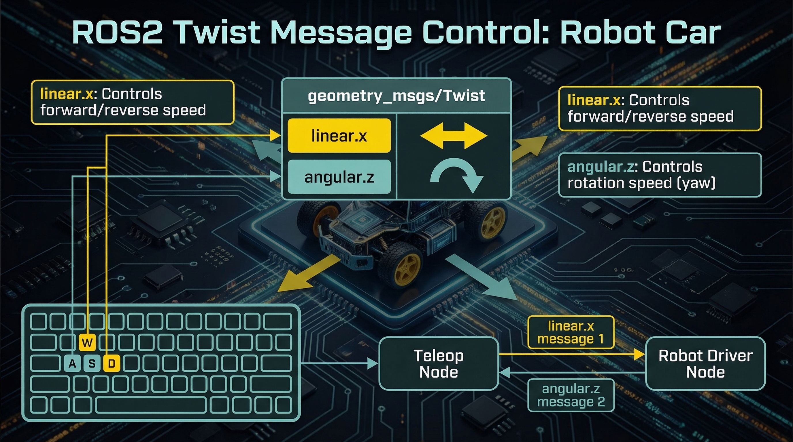

linear (线速度)
x: 前进/后退 (m/s)
y: 左/右平移 (m/s)
angular (角速度)
z: 左/右转向 (rad/s)
pitch, roll: 俯仰/翻滚
W/S: 前进/后退 A/D: 左转/右转 Space: 停止
键盘按键 -> Twist消息 -> 底层电机控制
from geometry_msgs.msg import Twist
cmd = Twist(); cmd.linear.x = 0.5; publisher.publish(cmd)
最大线速度
1.0
m/s (可调)
最大角速度
2.0
rad/s (可调)
加速度限制
0.5
m/s² (保护)

案例：turtlebot3机器人运动控制
cmd.linear.x = 0.2 (前移) cmd.angular.z = 0.5 (左转)
/cmd_vel 主题发布Twist消息控制机器人运动